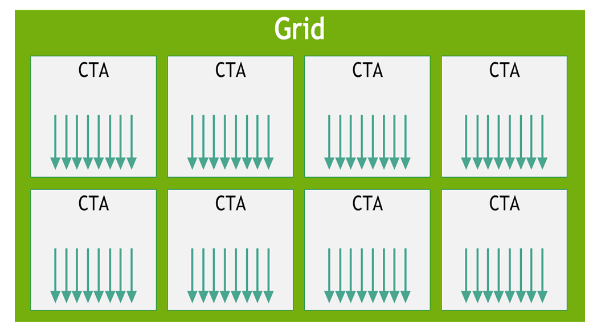
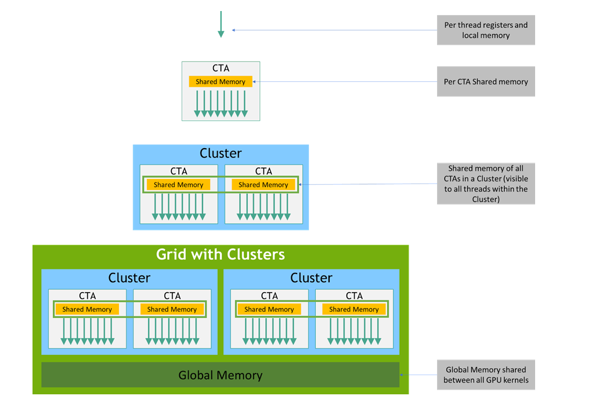

本章介绍 PTX 的编程模型：GPU 作为一个高度多线程的协处理器，线程以怎样的层级结构（CTA → cluster → grid）组织，以及数据在怎样的存储层级（state space）中被访问。理解这套模型，是读懂后续指令集与语法的基础。
CTA（Cooperative Thread Array，协作线程数组）—— 对应 CUDA 中的 thread block（线程块）。cluster（线程块集群）—— 对应 CUDA 中的 thread block cluster，仅 sm_90 及以上架构支持。warp（线程束）—— 32 个线程为一组，以 SIMT 方式同时执行。SIMT（Single Instruction, Multiple Thread，单指令多线程）—— GPU 的执行模型。grid（网格）—— 一次 kernel 启动所派发的全部线程批次，由 CTA 或 cluster 组成。
GPU 是一种计算设备，能够并行执行数量极为庞大的线程。它作为主 CPU（或称 host，主机）的协处理器工作：换句话说，那些在主机上运行、具有数据并行特性且计算密集的部分，会被“卸载”到设备上执行。
更精确地说，应用程序中那些会被反复执行、却又彼此独立地处理不同数据的部分，可以被单独抽离成一个 kernel（核函数），由 GPU 以许多不同的线程并行执行。为了实现这一点，这样的函数会被编译成 PTX 指令集，而生成的 kernel 会在安装时（install time）被翻译成目标 GPU 的原生指令集。
__global__ 函数就是一个 kernel。用 <<<grid, block>>> 启动它时，CUDA 运行时会把这份 kernel 编译出的 PTX 进一步 JIT 翻译成当前显卡能执行的机器码。PTX 扮演的是“可移植的中间表示”角色。
执行一个 kernel 的那一大批线程，被组织成一个 grid（网格）。一个 grid 由 协作线程数组（CTA） 或 协作线程数组的集群（cluster of CTAs） 构成，如 图 1 与 图 2 所示。协作线程数组（CTA，Cooperative Thread Array）实现的是 CUDA 的 thread block（线程块）；而 cluster 实现的则是 CUDA 的 thread block cluster（线程块集群）。
dim3 gridDim, dim3 blockDim 分别对应 grid 与 CTA 的维度。从 CUDA 编程视角，PPT 里说的 CTA 就是你熟悉的 block；cluster 是 Hopper（sm_90）之后才引入的、把多个 block 绑定在一起协同工作的机制。
PTX（Parallel Thread Execution，并行线程执行） 编程模型是显式并行的：一份 PTX 程序描述的是并行线程数组中“某一个具体线程”如何执行。所谓 CTA（协作线程数组），就是一组并发或并行执行同一个 kernel 的线程。
同一个 CTA 内部的线程可以相互通信。为了协调这种通信，可以设定同步点（synchronization point）：线程在此等待，直到 CTA 内所有线程都抵达该点，才继续往下走。
每个线程在 CTA 内部都有一个唯一的线程标识符（thread identifier）。程序采用数据并行分解的方式，把输入、工作和结果分摊到 CTA 的各个线程上。每个 CTA 线程利用自己的线程标识符来确定所承担的角色、指定输入与输出的位置、计算地址并选择要执行的工作。线程标识符是一个三维向量 tid（由 tid.x、tid.y、tid.z 三个分量组成），表示线程在 1D、2D 或 3D 的 CTA 中所处的位置。每个分量取值范围从 0 到该维度上的线程编号上限。
tid 就是 CUDA 内建变量 threadIdx，ntid 对应 blockDim。例如 tid.x = threadIdx.x，取值 0 … blockDim.x−1。
每个 CTA 本身的形状（1D、2D 或 3D）由一个三维向量 ntid（由 ntid.x、ntid.y、ntid.z 组成）指定，它给出的是 CTA 在每个维度上的线程数量。
CTA 内部的线程以 SIMT（Single-Instruction, Multiple-Thread，单指令多线程） 的方式，按称为 warp（线程束） 的组来执行。一个 warp（线程束） 是来自单个 CTA 的、能同时执行相同指令的线程的最大子集。warp 内的线程是顺序编号的。warp 的大小是一个与具体机器相关的常量，通常一个 warp 包含 32 个线程。部分应用若能获知 warp 大小，便可能借此最大化性能，因此 PTX 提供了一个运行时立即数常量 WARP_SZ，可在任何允许立即数操作数的指令中使用。
threadIdx.x 从 0 到 31 的线程，自然属于第 0 个 warp；32–63 属于第 1 个 warp，以此类推。PTX 里的 %tid 就是 threadIdx，WARP_SZ 则相当于 CUDA C++ 里的 warpSize 内建常量。SIMT 与 SIMD 的差别见第 3 章：SIMT 对程序员隐藏了“线程束”这个宽度，你写的是单线程标量代码，由硬件把同 warp 的线程打包执行。
cluster（集群） 是一组并发或并行运行的 CTA，它们可以通过共享内存（shared memory）相互同步与通信。正在执行的 CTA 在与对端 CTA 通过共享内存通信之前，必须确保对端 CTA 的共享内存确实存在，且对端 CTA 在完成共享内存操作之前尚未退出。
同一个 cluster 内、不同 CTA 中的线程，可以通过共享内存相互同步与通信。cluster 级的屏障（cluster-wide barrier）可用于同步 cluster 内的所有线程。cluster 中每个 CTA 在其 cluster 内有一个唯一的 CTA 标识符（cluster_ctaid）；每个 CTA 集群的形状（1D、2D 或 3D）由参数 cluster_nctaid 指定；cluster 中每个 CTA 在所有维度上还有一个唯一的 CTA 标识符（cluster_ctarank）；cluster 在所有维度上的 CTA 总数由 cluster_nctarank 指定。线程可以通过预定义、只读的特殊寄存器读取并使用这些值：%cluster_ctaid、%cluster_nctaid、%cluster_ctarank、%cluster_nctarank。
sm_90（Hopper）及以上才适用。这些特殊寄存器大致对应 CUDA 的 clusterIdx、clusterDim、clusterId / blockIdx 在集群视角下的变体。CUDA 通过 cudaLaunchKernelEx 配合 clusterDim 显式启动集群。
cluster 层级仅在目标架构 sm_90 及以上适用。在启动（launch）时指定 cluster 层级是可选的：若用户在启动时指定了 cluster 维度，则被视为显式集群启动（explicit cluster launch）；否则被视为隐式集群启动（implicit cluster launch），默认维度为 1×1×1。PTX 提供只读特殊寄存器 %is_explicit_cluster 来区分显式与隐式集群启动。
一个 CTA 能容纳的线程数有上限，一个 cluster 能容纳的 CTA 数也有上限。不过，执行同一 kernel 的 CTA 所组成的 cluster，可以被批量打包成一个 集群网格（grid of clusters），因此单次 kernel 调用所能启动的线程总数可以非常庞大。代价则是线程间的通信与同步能力减弱——不同 cluster 之间的线程无法相互通信与同步。
在一个集群网格中，每个 cluster 拥有唯一的集群标识符（clusterid）；每个集群网格的形状（1D、2D 或 3D）由参数 nclusterid 指定；每个 grid 还有一个唯一的、带时间性的网格标识符（gridid）。线程可以通过预定义、只读的特殊寄存器读取并使用这些值：%tid、%ntid、%clusterid、%nclusterid 和 %gridid。
%ctaid / %nctaid 对应 CUDA 的 blockIdx / gridDim；%tid / %ntid 对应 threadIdx / blockDim；%clusterid / %nclusterid 则是集群视角下的 clusterIdx / clusterDim。注意 %tid 在 PTX 特殊寄存器里既用于线程标识，文档此处也把它列在 cluster 网格层级上下文中。
每个 CTA 在一个 grid 内有唯一的标识符（ctaid）；每个由 CTA 组成的 grid 的形状（1D、2D 或 3D）由参数 nctaid 指定。线程可以通过预定义、只读的特殊寄存器 %ctaid 和 %nctaid 使用并读取这些值。
每个 kernel 都是作为一批线程来执行的，这批线程被组织成一个由 CTA 构成的集群网格（grid of clusters）；其中 cluster 是可选的层级，且仅在目标架构 sm_90 及以上才适用。图 1 展示了一个由 CTA 组成的网格，图 2 展示了一个由 cluster 组成的网格。
grid 之间可以带有相互依赖关系——一个 grid 既可以是依赖网格（dependent grid），也可以是前提网格（prerequisite grid）。要了解如何定义 grid 间的依赖，请参考 CUDA Programming Guide 中关于 CUDA Graphs 的章节。

cluster 是协作线程数组（CTA）的集合，而 CTA 是执行同一 kernel 程序的并发线程的集合；grid 则是执行相互独立任务的、由 CTA 构成的 cluster 的集合。
PTX 线程在执行期间可以从多个 state space（状态空间，可理解为不同的内存地址空间） 访问数据，如 图 3 所示（其中 cluster 层级自目标架构 sm_90 起引入）。每个线程拥有私有的 local memory（本地内存）；每个线程块（CTA）拥有共享内存（shared memory），它对块内所有线程以及 cluster 内所有活跃块都可见，且生命周期与该块一致；最后，所有线程都能访问同一块 global memory（全局内存）。

除了上述空间，所有线程还可以访问另一些状态空间：constant（常量）、param（参数）、texture（纹理）和 surface（表面）状态空间。常量内存与纹理内存是只读的；表面内存可读也可写。全局、常量、参数、纹理和表面这几种状态空间针对不同的内存使用方式做了优化。例如纹理内存提供了不同的寻址模式，以及针对特定数据格式的数据过滤。需要注意：纹理和表面内存是带缓存的，而在同一次 kernel 调用内，该缓存相对于全局内存写入和表面内存写入并不保持一致性（coherent）——因此，若某个地址在同一次 kernel 调用中已被全局写入或表面写入改写过，再对它做纹理读取或表面读取，将返回未定义的数据。换句话说，线程只有在该内存位置已被上一次 kernel 调用或内存拷贝更新过时，才能安全地读取它；若它是由同一次 kernel 调用中的本线程或其他线程刚写入的，则不可安全读取。
全局、常量和纹理状态空间在由同一应用发起的多次 kernel 启动之间是持久（persistent）的。
主机和设备各自维护自己的本地内存，分别称为 host memory（主机内存） 与 device memory（设备内存）。设备内存既可以被主机映射（map）后进行读写，也可以通过利用设备高性能 DMA（Direct Memory Access，直接内存访问） 引擎的优化 API 调用，从主机内存拷贝过去，以实现更高效的传输。
本文档译自 NVIDIA Parallel Thread Execution ISA Version 9.3，第 2 章 Programming Model。图 1–3 取自官方文档对应 SVG/PNG 资源。仅供学习参考，如与官方原文冲突，以原文为准。